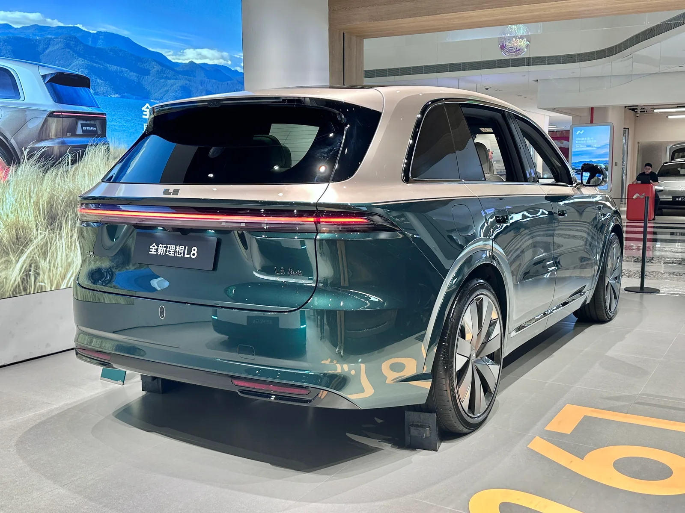

▲ 샤오미는 SU7·YU7에 이어 신형 澎程(펑청) 시리즈부터 자체 개발 '용갑전지' 체계를 적용한다 ⓒ Wikimedia Commons
2026년 9월 첫째 주, 중국 전기차 업계에서 사흘 간격으로 비슷한 발표가 이어졌다. 9월 4일 샤오미는 자체 개발 배터리 체계 '용갑전지(龙甲电池)'를 공개했고, 사흘 뒤인 9월 7일에는 리오토(理想汽车)가 자체 개발 배터리가 이미 L8·L6·i8에 양산 탑재되고 있다고 발표했다.
두 회사가 강조한 메시지는 같았다. 더 이상 배터리를 통째로 외부에 맡기지 않겠다는 것. 그동안 중국 전기차 시장의 배터리 공급을 사실상 독점하다시피 했던 CATL(닝더스다이)의 입지에 균열이 생기고 있다는 신호로 읽힌다.
1. 왜 지금, 중국 EV 업계는 배터리를 직접 만들려 하나
중국 전기차 시장에서 CATL의 존재감은 압도적이었다. 2026년 8월 기준으로도 CATL은 중국 내 동력배터리 장착량의 41.45%를 차지하며 여전히 1위를 지키고 있다. 그러나 최근 1~2년 사이 주요 완성차 업체들이 하나둘 CATL 의존도를 낮추기 시작했다.
가장 상징적인 사례가 리오토다. 2026년 6월 출시된 신세대 Li L8은 전 사양의 배터리 셀을 신왕다(Sunwoda) 제품으로 전환하면서, 이 모델 라인업에서 CATL을 완전히 제외했다. 샤오미 역시 배터리 공급사를 CATL·FinDreams(비야디 산하)·중창신항(CALB)·신왕다 4개사로 넓혔고, 신형 澎程 라인업의 배터리는 신왕다와 중창신항이 맡아 CATL이 아예 빠졌다.
📍 CATL, 여전히 1위지만 흔들리는 '갑'의 지위
업계에서는 CATL이 그동안 압도적 점유율을 바탕으로 공급 조건이나 가격 협상에서 우위를 가져왔다는 평가가 많았다. 그러나 CALB(중창신항)·궈쉬안하이테크(Gotion)·신왕다·EVE에너지 등 후발 배터리 업체들이 낮은 단가와 유연한 협력 조건을 앞세워 완성차 업체들의 물량을 조금씩 가져가고 있다. CATL 주가는 2026년 5월 고점(467.35위안) 대비 약 35% 하락하며 1년 만에 최저 수준까지 밀렸는데, 시장에서는 이를 중국 완성차 업체들의 공급망 다변화 가속에 대한 우려로 해석하고 있다.
2. 샤오미 '용갑전지' — 직접 셀을 만들진 않지만, 설계는 직접 한다
샤오미가 9월 4일 공개한 '용갑전지(龙甲电池)'는 정확히는 샤오미가 셀을 직접 생산하는 자체 셀이 아니다. 샤오미 차량 전체의 시각에서 만든 동력배터리 표준 체계이자 시스템 솔루션에 가깝다. 셀 생산은 중창신항(CALB)과 신왕다(Sunwoda) 두 대형 배터리 업체가 맡고, 샤오미는 제품 정의와 배터리 팩 설계·개발을 주도하며 셀 연구개발 단계부터 깊이 관여해 전 과정 품질 관리를 수행하는 구조다.
| 항목 | 내용 |
|---|---|
| 발표일 | 2026년 9월 4일 |
| 성격 | 샤오미 주도 배터리 표준·시스템 솔루션 (셀 자체 생산 아님) |
| 셀 생산 협력사 | 중창신항(CALB), 신왕다(Sunwoda) — 듀얼 공급사 체제 |
| 첫 탑재 모델 | 澎程(펑청) N70·N90 시리즈 (2026년 9월 출시) |
| 澎程 N70 사양 | 대형 5인승 SUV, 76kWh 삼원계 또는 52kWh 인산철 배터리, 최대 순수 주행거리 505km |
| 기존 SU7·YU7 | SU7은 CATL·FinDreams 셀 위주, YU7부터는 CATL 비중이 절반 수준으로 이미 축소 |

▲ 샤오미의 용갑전지는 자체 생산이 아니라 협력사 셀에 샤오미가 설계·품질관리를 주도하는 구조다(제품 이해를 돕기 위한 배터리 생산라인 이미지) ⓒ Wikimedia Commons
업계에서는 샤오미의 이번 발표를 두고 완성차 업체가 배터리 제조업 자체에 뛰어드는 것 아니냐는 전망도 나온다. 실제로 샤오미는 별도의 배터리 제조 자회사 설립을 추진하는 등 자구책 성격의 움직임도 함께 보이고 있다.
3. 리오토, 이미 양산 중인 자체 배터리와 i9의 과도기 전략
리오토는 샤오미보다 한발 더 나간 발표를 내놨다. 9월 7일 리오토는 자체 개발한 5C 삼원계 배터리가 이미 L8·L6·i8 세 모델에 양산 탑재되고 있다고 밝히며, 앞으로 전 차종에 순차 확대 적용하겠다고 공식화했다.
리오토는 2020년부터 독자적으로 배터리 셀 연구개발에 착수했고, 셀·팩·BMS(배터리관리시스템)를 아우르는 완결형 배터리 시스템을 구축해왔다. 배터리 제조는 신왕다(Sunwoda)에 위탁하는 구조인데, 리오토는 9월 신왕다 EVB에 26억5000만 위안(약 5000억 원 규모)을 전략 투자해 지분율을 11.17%까지 늘리며 2대 주주 지위에 올랐다. 셀 설계는 직접 하되 생산 파트너와는 지분으로 묶인 구조를 택한 셈이다.
✅ 리오토 모델별 배터리 전환 일정
· L8·L6·i8 — 자체 개발 5C 배터리 이미 양산 탑재 중(2026년 6월 신세대 L8부터 CATL 완전 배제)
· i9(2026년 9월 중순 출시) — 초기 물량은 CATL의 5C 삼원계 배터리 사용, 생산 안정화 이후 자체 개발 배터리로 전량 전환 예정
· 2026년형 i6(4분기 출시 예정) — 자체 개발 5C 배터리와 자체 개발 '마허(马赫, Mach)' 칩 탑재, 9월 말 사전예약·11월 초 인도 시작. 다만 중국 공업정보화부(MIIT) 등록 서류에는 배터리 제조사가 CALB(중창신항)로 기재돼, '자체 개발'은 설계·사양 주도를 의미하며 실제 셀 생산은 협력사가 맡는 구조로 해석됨
· 신세대 MEGA — 초기 인도 물량은 CATL 배터리 사용, 9월 7일 오후 3시 이후 계약 고객부터 자체 개발 배터리로 전환, 11월 인도 예정

▲ 리오토 MEGA도 9월 7일 이후 신규 계약분부터 자체 개발 배터리로 순차 전환된다 ⓒ Wikimedia Commons
리오토의 자체 개발 배터리 전면 적용 계획과 관련한 해외 보도는 아래에서 확인할 수 있다. CarNewsChina 관련 기사 바로가기
i9의 사례가 흥미로운 이유는 '과도기 전략'을 명시적으로 밝혔다는 점이다. 신차 출시 초기에는 검증된 CATL 배터리로 안정적인 초도 물량을 확보하고, 생산 라인이 안정화된 뒤 자체 개발 배터리로 갈아타는 방식이다. 이는 배터리 자립을 서두르되 초기 품질 리스크는 최소화하려는 절충안으로 풀이된다.
4. 완성차 업체는 왜 배터리 내재화를 서두르나 — 공급망 리스크와 원가
완성차 업체가 배터리 설계까지 손대는 이유는 크게 두 가지로 요약된다.
📍 첫째, 공급망 통제력 — 한 업체에 의존하지 않는 것
CATL이 중국 동력배터리 시장에서 40% 안팎의 점유율을 유지하는 동안, 완성차 업체 입장에서는 공급 물량·가격·기술 로드맵을 사실상 CATL 일정에 맞출 수밖에 없는 구조였다는 평가가 많다. 자체 배터리 설계 능력을 확보하면 특정 공급사의 생산 차질이나 가격 인상 압박에서 벗어날 수 있고, 여러 셀 제조사에 동일한 설계를 맡겨 생산을 분산시킬 수도 있다. 샤오미가 용갑전지를 듀얼 공급사(중창신항·신왕다) 체제로 설계한 것도 같은 맥락이다.
📍 둘째, 원가 경쟁력 — 중간 마진을 줄이는 것
배터리는 전기차 원가에서 가장 큰 비중을 차지하는 부품이다. 완성차 업체가 셀 사양·팩 설계까지 직접 정의하면, 배터리 업체에 완제품 형태로 넘기는 것보다 스펙 최적화와 협상력 확보 양쪽에서 원가를 낮출 여지가 커진다. 리오토가 신왕다 EVB에 지분 투자를 단행해 2대 주주에 오른 것도, 위탁 생산 관계를 넘어 원가와 생산 우선순위에 대한 발언권을 키우려는 조치로 해석된다.
다만 CATL도 여전히 압도적 규모의 경제와 기술 축적을 갖추고 있어, 완성차 업체들의 '탈CATL'이 전면적인 결별이라기보다는 공급처를 여러 곳으로 나누는 리스크 분산에 가깝다는 시각도 있다. 실제로 CATL은 2026년 8월에도 41.45%라는 여전히 높은 점유율을 지키고 있다.
5. 한국 배터리 3사에 주는 시사점
이번 흐름은 한국 배터리 3사(LG에너지솔루션·삼성SDI·SK온)에도 시사하는 바가 크다. 그동안 한국 배터리 업계는 중국 CATL과의 점유율·가격 경쟁이 주된 화두였다. 그런데 완성차 업체들이 이제 CATL을 포함한 특정 배터리 업체에 대한 의존도 자체를 낮추려는 방향으로 움직이면서, 경쟁 구도가 '셀 제조사 대 셀 제조사' 구도에서 '완성차 업체의 자체 설계 대 외부 셀 공급사' 구도로 일부 옮겨가고 있다는 평가가 나온다.

▲ 2026년 6월 출시된 신세대 Li L8. 완성차 업체의 배터리 내재화 흐름은 셀 제조사 간 점유율 경쟁 구도 자체를 바꿔놓을 수 있다 ⓒ Wikimedia Commons (JustAnotherCarDesigner, CC0)
✅ 한국 배터리 업계가 주목해야 할 지점
· 완성차 업체향 '완제품 셀' 공급 모델의 한계 — 중국 완성차사들이 셀 설계·팩 개발까지 직접 하려는 추세는, 향후 완성차 업체가 한국 업체에도 '셀 위탁생산' 형태의 협력을 요구할 가능성을 시사
· 기술 격차 유지의 중요성 — 한국 3사는 여전히 삼원계·고에너지밀도·전고체 배터리 등 기술 우위를 갖고 있다는 평가가 많지만, 매출·수익성에서는 CATL 한 곳에도 뒤지는 것으로 조사된 바 있어 규모의 경제 격차가 뚜렷함
· 완성차와의 지분·합작 관계 강화 필요성 — 리오토가 신왕다에 지분 투자로 협력 관계를 강화한 것처럼, 완성차 업체와의 합작법인·지분 참여 확대가 안정적 수주 확보의 관건이 될 수 있음
· 중국 외 시장에서의 입지 재확인 — 중국 내수 시장에서 완성차 업체들의 배터리 내재화가 가속화되는 만큼, 북미·유럽 등 비중국 시장에서의 공급 계약 확대가 상대적으로 더 중요해짐
CATL 주가 하락과 중국 완성차 업체들의 공급망 다변화에 대한 국내 보도는 아래에서 확인할 수 있다. 글로벌이코노믹 관련 기사 바로가기
6. 요약
2026년 9월 초, 샤오미와 리오토가 사흘 간격으로 자체 개발 배터리 체계를 발표했다. 샤오미는 중창신항·신왕다와 협력해 셀을 생산하되 설계를 주도하는 '용갑전지' 체계를 澎程 N70·N90에 처음 적용하고, 리오토는 자체 개발 5C 배터리를 L8·L6·i8에 이미 양산 탑재했으며 신형 i9와 2026년형 i6에도 순차 확대 적용한다.
배경에는 완성차 업체들의 공급망 통제력 확보와 원가 경쟁력 강화 의지가 있다. CATL은 여전히 압도적 점유율을 유지하고 있지만, 리오토·샤오미를 비롯한 주요 업체들이 공급처를 다변화하면서 주가가 1년 만에 최저 수준까지 밀리는 등 시장의 우려도 커지고 있다.
이 흐름은 한국 배터리 3사에도 신호를 준다. 완성차 업체의 배터리 설계 내재화가 확산될수록, 셀 제조사 간 점유율 경쟁뿐 아니라 완성차와의 지분·합작 관계, 비중국 시장에서의 입지가 더 중요한 경쟁 요소로 부상할 수 있다.